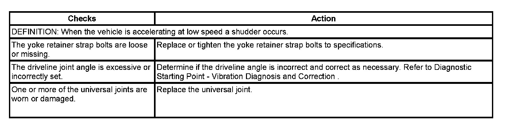

Operation CHARM
: Car repair manuals for everyone.
Home
>>
Cadillac
>>
2007
>>
Escalade ESV AWD V8-6.2L
>>
Repair and Diagnosis
>>
Transmission and Drivetrain
>>
Drive/Propeller Shafts, Bearings and Joints
>>
Testing and Inspection
>>
Symptom Related Diagnostic Procedures
>>
Shudder on Acceleration at Low Speed
Shudder on Acceleration at Low Speed
Shudder on Acceleration at Low Speed
Shudder on Acceleration at Low Speed:
